Бюджетники Харькова.
Их проблемы = наши проблемы вдвойне

Начнем серию статей о проблемах харьковчан, работающих на государство (и органы местного самоуправления).
Пока посмотрим на 3 проблемы, но мы ждем отклика от самих "бюджетников" (с описанием ситуации и путей выхода из нее). Естественно, ф.и.о. и должность заявителя приводить не нужно, поступившую информацию мы обработаем и проверим журналистским путем.
Проблема №1. Принудительные отпуска за свой счет
Итак, в чем проблема: в Украине огромные проблемы с финансированием выплат работникам бюджетной сферы (кстати, возникшей в том числе вследствие феноменальных хищений из бюджета и уклонения крупными финансово-промышленными группами от уплаты налогов).
Так вот, если заставить работника-бюджетника написать заявление о том, что он хочет пойти в отпуск "за свой счет" (ну на недели 2 или на месяц), то можно сэкономить на выплатах. Но злой прикол в том, что бюджетников при этом заставляют работать во время этого отпуска за свой счет. И речь не о богатых руководителях, речь об обычных врачах, учителях, которым и так не сладко живется…
Какую аргументацию приводят при таком принуждении: "если не соглашаетесь, то мы вынуждены будем вас просто уволить, средств в бюджете нет, это единственный способ сбалансировать бюджет".
Проблема в том, что мы с Вами не получаем адекватной работы от врачей, учителей и пр., ведь харьковчан просто лишают достаточного количества и качества услуг (и так весьма плохоньких), оказываемых всеми, кто работает за средства бюджета.
Как не странно, но ряд профсоюзных организаций бюджетников решились вынести эту проблему на уровень центральных органов власти. Вот что говорили на эту темы кураторы от власти:
Письмо Госинспекции по вопросам труда от 11 октября 2013:
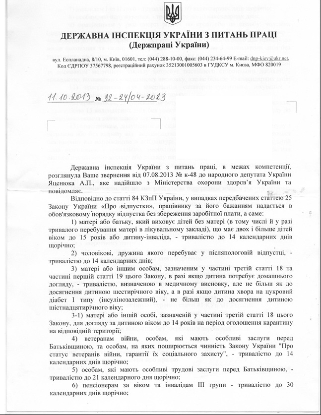 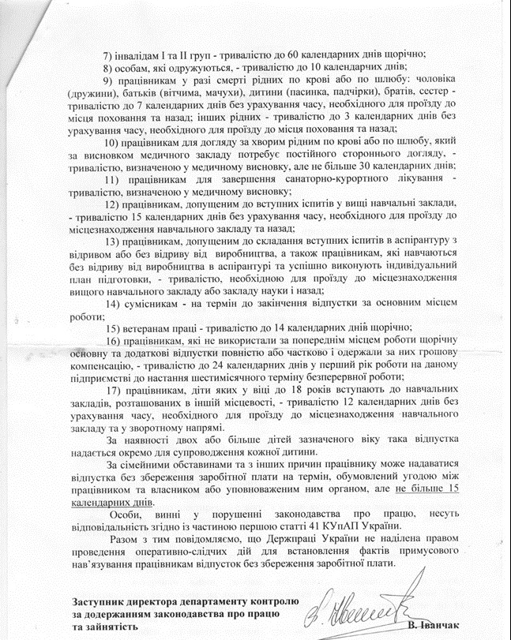
Письмо Минздрава от 21 ноября 2013 года:


Как видим, госорганы недоумевают, как вообще может существовать описанная практика ПРИНУДИТЕЛЬНЫХ отпусков за свой счет и рады решить любую жалобу (только если она поступит). Мол, Закон не предусматривает ни принудительных отпусков, ни работы в период таких отпусков.
Вне всяких сомнений, это потрясающее лицемерие со стороны авторов приведенного разъяснения. Полагаем, они прекрасно знают о такой вот практике. Что ж, можно посоветовать направлять жалобы от журналистов (через нас, например) или же через профсоюз, любую деятельную общественную организацию. Просто чтоб не ставить под удар конкретного бюджетника (с жалобщиками расправляются безжалостно, особенно в сфере структур Минздрава).
Проблема №2. Принуждение к участию в системе взяток/поборов
Вот лишь некоторые "крики души" харьковских бюджетников, которым неприятно выполнять функцию по приему "черного нала" и передачи его начальству. Речь о Московском районе г.Харькова.
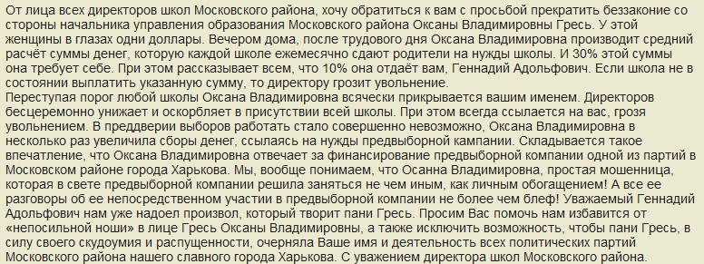 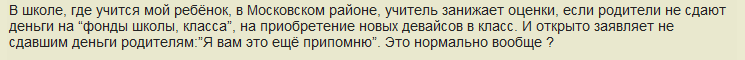 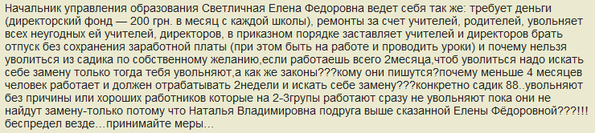 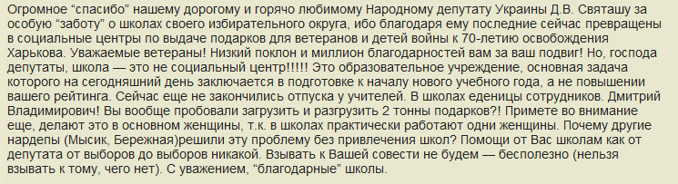 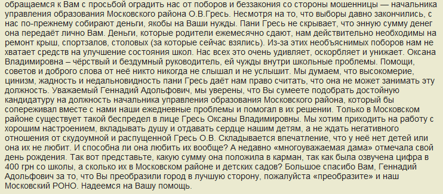 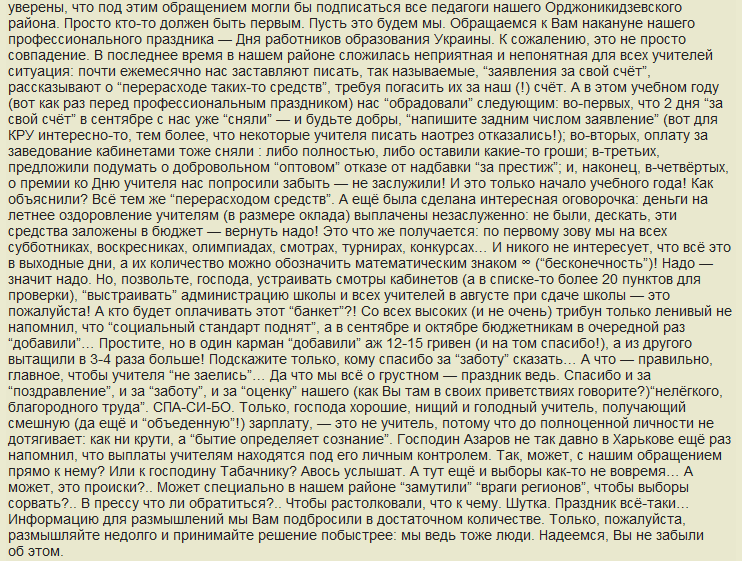 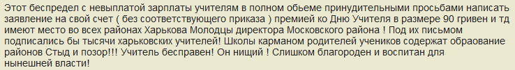 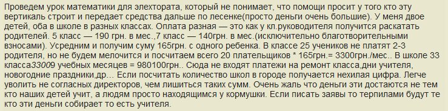 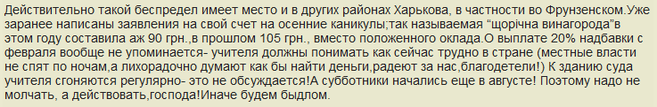 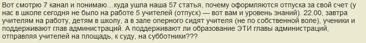
Проблема №3. Бесплатное "живое мясо" для массовых акций и других субботников
То унылое и позорное зрелище, которое лицезрели харьковчане 30 ноября 2013 года, не должно повторяться снова и снова. Напомним, в этот день на площадь перед зданием администрации выгнали бюджетников "в поддержку курса Президента". А через несколько дней их принудительно грузили в холодные декабрьские вагоны и отправляли в Киев на Антимайдан.
Зрелые и разумные люди были выставлены как рядок кегель для игры двумя весьма сомнительными личностями… Остались висеть в воздухе вопросы:
- довольны ли такой ситуацией сами бюджетники? Есть сомнение в этом…
- кто поверил в этот цирк (что это и это на самом деле группа харьковчан, пламенно поддерживающих силы Партии Регионов)? Вряд ли существуют настолько наивные личности, дипломатическим работникам и иностранным СМИ была в подробностях известна подноготная таких принудительных "выгонов " бюджетников на акции.
- была ли польза имиджу властей от такой клоунады?
Озлобленность самих бюджетников… Уставшее от нечестности власти общество добавило еще 1 градус ненависти и 1 градус злости. Громада Харькова сейчас уже иная: закаленная годами обмана, более зрелая, более думающая.